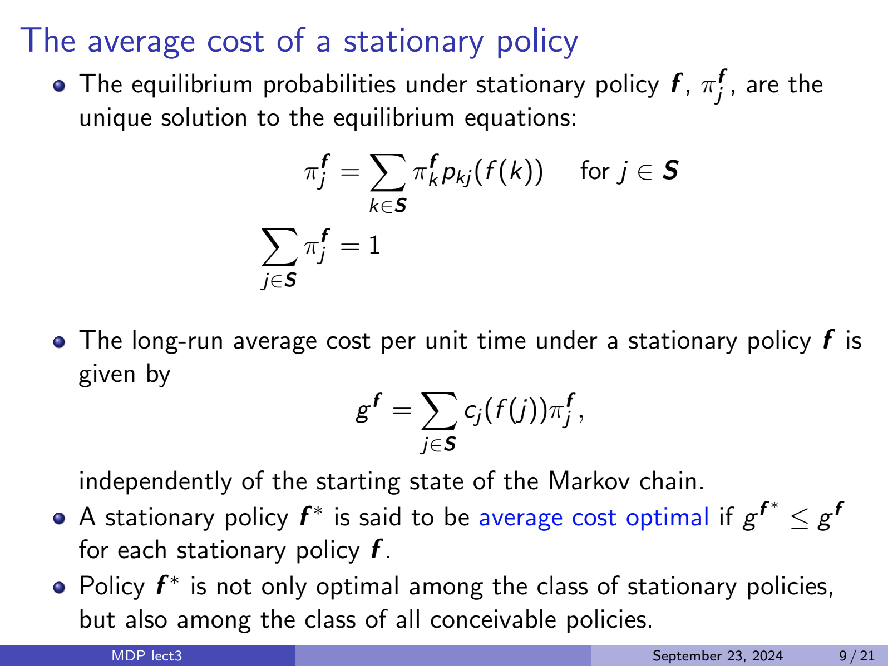

Stationary policy equilibrium probabilities

Equilibrium Equations for Markov Decision Processes
Given a set of states \(S\), a stationary policy \(f\), and transition probabilities \(p_{kj}(a)\) where \(a = f(k)\) is the action taken in state \(k\), the equilibrium (steady-state) probabilities \(\pi^f_j\) satisfy the following system of equations:
1. Equilibrium Equations
For each state \(j \in S\):
\[ \pi^f_j = \sum_{k \in S} \pi^f_k \cdot p_{kj}(f(k)) \]
This equation states that the steady-state probability of being in state \(j\) is the sum over all states \(k\) of the probability of being in state \(k\) and moving to state \(j\) under policy \(f\).
2. Normalization Constraint
The probabilities must sum to 1:
\[ \sum_{j \in S} \pi^f_j = 1 \]
Example: Two-State Markov Chain
Let’s consider a simple Markov chain with two states \(S = \{0, 1\}\) and a policy \(f\) that always chooses action \(a = 0\). The transition probabilities under action \(0\) are:
- \(p_{00}(0) = 0.7\): Probability of staying in state \(0\)
- \(p_{01}(0) = 0.3\): Probability of moving from state \(0\) to \(1\)
- \(p_{10}(0) = 0.4\): Probability of moving from state \(1\) to \(0\)
- \(p_{11}(0) = 0.6\): Probability of staying in state \(1\)
Equilibrium Equations
We write the equilibrium equations for each state.
For State \(j = 0\):
\[ \pi^f_0 = \pi^f_0 \cdot p_{00}(0) + \pi^f_1 \cdot p_{10}(0) \]
Substitute the known probabilities:
\[ \pi^f_0 = \pi^f_0 \cdot 0.7 + \pi^f_1 \cdot 0.4 \]
For State \(j = 1\):
\[ \pi^f_1 = \pi^f_0 \cdot p_{01}(0) + \pi^f_1 \cdot p_{11}(0) \]
Substitute the known probabilities:
\[ \pi^f_1 = \pi^f_0 \cdot 0.3 + \pi^f_1 \cdot 0.6 \]
Normalization Constraint
\[ \pi^f_0 + \pi^f_1 = 1 \]
Solving the Equations
We can rearrange the equations to solve for \(\pi^f_0\) and \(\pi^f_1\).
Equation for State \(0\):
\[ \pi^f_0 = 0.7 \pi^f_0 + 0.4 \pi^f_1 \]
Subtract \(0.7 \pi^f_0\) from both sides:
\[ \pi^f_0 - 0.7 \pi^f_0 = 0.4 \pi^f_1 \]
Simplify:
\[ 0.3 \pi^f_0 = 0.4 \pi^f_1 \]
Equation for State \(1\):
\[ \pi^f_1 = 0.3 \pi^f_0 + 0.6 \pi^f_1 \]
Subtract \(0.6 \pi^f_1\) from both sides:
\[ \pi^f_1 - 0.6 \pi^f_1 = 0.3 \pi^f_0 \]
Simplify:
\[ 0.4 \pi^f_1 = 0.3 \pi^f_0 \]
Set Up the System of Equations
Now we have:
- \(0.3 \pi^f_0 = 0.4 \pi^f_1\) (1)
- \(0.4 \pi^f_1 = 0.3 \pi^f_0\) (2) (Note: This is the same as equation (1))
- \(\pi^f_0 + \pi^f_1 = 1\) (3)
Since equations (1) and (2) are the same, we can use one of them along with the normalization constraint.
Solve for \(\pi^f_1\) in Terms of \(\pi^f_0\)
From equation (1):
\[ 0.3 \pi^f_0 = 0.4 \pi^f_1 \]
Solve for \(\pi^f_1\):
\[ \pi^f_1 = \frac{0.3}{0.4} \pi^f_0 = \frac{3}{4} \pi^f_0 \]
Use the Normalization Constraint
From equation (3):
\[ \pi^f_0 + \pi^f_1 = 1 \]
Substitute \(\pi^f_1\):
\[ \pi^f_0 + \frac{3}{4} \pi^f_0 = 1 \]
Simplify:
\[ \pi^f_0 \left(1 + \frac{3}{4}\right) = 1 \\ \pi^f_0 \left(\frac{4}{4} + \frac{3}{4}\right) = 1 \\ \pi^f_0 \left(\frac{7}{4}\right) = 1 \]
Solve for \(\pi^f_0\):
\[ \pi^f_0 = \frac{1}{\frac{7}{4}} = \frac{4}{7} \]
Find \(\pi^f_1\)
\[ \pi^f_1 = \frac{3}{4} \pi^f_0 = \frac{3}{4} \cdot \frac{4}{7} = \frac{3}{7} \]
Final Equilibrium Probabilities
- \(\pi^f_0 = \dfrac{4}{7} \approx 0.5714\)
- \(\pi^f_1 = \dfrac{3}{7} \approx 0.4286\)
Summary
The system of equilibrium equations consists of:
One equation per state: Each expresses the balance between the probability of being in a state and the probabilities of transitioning into that state from all other states under policy \(f\).
Normalization constraint: Ensures that the probabilities sum to 1.
These equations can be set up in matrix form and solved using linear algebra techniques.
Note: In larger Markov chains, the system of equations may become more complex, but the principle remains the same. Solving the equilibrium equations provides the steady-state probabilities under a given policy, which is essential for analyzing long-run behavior and performance metrics in Markov Decision Processes.
Code
To compute the equilibrium probabilities \(\pi^f_j\) under a stationary policy \(f\), you can solve the system of linear equations defined by:
Equilibrium Equations:
\[ \pi^f_j = \sum_{k \in S} \pi^f_k \cdot p_{kj}(f(k)) \quad \text{for all } j \in S \]
Normalization Constraint:
\[ \sum_{j \in S} \pi^f_j = 1 \]
These equations state that the probability of being in state \(j\) is equal to the sum over all states \(k\) of the probability of being in state \(k\) and moving to state \(j\) under policy \(f\).
Implementation in Code
Below is a Python code example that computes the equilibrium probabilities \(\pi^f_j\) given:
- A set of states \(S\).
- A stationary policy \(f\) that maps each state \(k \in S\) to an action \(a \in A\).
- Transition probabilities \(p_{kj}(a)\) for each action \(a\).
We’ll use NumPy for numerical computations.
import numpy as np
# Define the set of states
S = [...] # List of states, e.g., S = [0, 1, 2, ..., S_max]
# Define the action set (if needed)
A = [...] # List of actions, e.g., A = [0, 1, 2]
# Define the policy function f(k): returns the action to take in state k
def f(k):
# Example policy: always choose action 1
# Replace this with your actual policy
return ...
# Define the transition probability function p_kj(k, j, a): returns p_{kj}(a)
def p_kj(k, j, a):
# Replace this with your actual transition probabilities
# For example:
# if k == j:
# return 0.5
# else:
# return 0.5 / (len(S) - 1)
return ...
# Map states to indices for matrix computations
state_to_index = {state: idx for idx, state in enumerate(S)}
index_to_state = {idx: state for state, idx in state_to_index.items()}
# Number of states
n_states = len(S)
# Construct the transition matrix P under policy f
P = np.zeros((n_states, n_states))
for k in S:
a = f(k)
k_idx = state_to_index[k]
for j in S:
j_idx = state_to_index[j]
P[k_idx, j_idx] = p_kj(k, j, a)
# Transpose P for solving the left eigenvector
P_T = P.T
# Set up the equations (P_T - I) * pi = 0
A = P_T - np.eye(n_states)
# Add the normalization constraint sum(pi) = 1
A = np.vstack([A, np.ones(n_states)])
b = np.zeros(n_states)
b = np.append(b, 1)
# Solve the linear system
# Use least squares in case the system is singular
pi, residuals, rank, s = np.linalg.lstsq(A, b, rcond=None)
# Display the equilibrium probabilities
print("Equilibrium probabilities π^f_j under policy f:")
for idx, prob in enumerate(pi):
state = index_to_state[idx]
print(f"State {state}: π^f_{state} = {prob}")Explanation of the Code
- State and Action Sets:
S: List of all possible states in your Markov chain.A: List of possible actions (if applicable).
- Policy Function
f(k):- Defines the action to take when in state
k. - Replace the placeholder with your specific policy.
- Defines the action to take when in state
- Transition Probability Function
p_kj(k, j, a):- Returns the probability of transitioning from state
kto statejgiven actiona. - Replace the placeholder with your actual transition probabilities.
- Returns the probability of transitioning from state
- Transition Matrix
P:- A square matrix of size
n_states x n_states. - Each element
P[k_idx, j_idx]represents the probability of moving from statekto statejunder policyf.
- A square matrix of size
- Solving the Linear System:
- We need to solve for the vector \(\pi\) such that \(\pi = \pi P\).
- This is equivalent to solving \((P^T - I) \pi = 0\), where \(I\) is the identity matrix.
- We add the normalization constraint \(\sum_j \pi_j = 1\) by appending a row of ones to
Aand appending1tob.
- Least Squares Solution:
- We use
np.linalg.lstsqto solve the linear system. - This method is robust to singular matrices and provides a least-squares solution if an exact solution doesn’t exist.
- We use
Example with a Concrete MDP
Suppose we have a simple MDP with states S = [0, 1] and actions A = [0, 1]. Let’s define:
Policy \(f\) that always chooses action
0.Transition probabilities:
If action
0is taken:- From state
0to0:p_00(0) = 0.7 - From state
0to1:p_01(0) = 0.3 - From state
1to0:p_10(0) = 0.4 - From state
1to1:p_11(0) = 0.6
- From state
Implementing this example:
import numpy as np
# Define the set of states
S = [0, 1]
# Define the policy function f(k): always choose action 0
def f(k):
return 0
# Define the transition probability function p_kj(k, j, a)
def p_kj(k, j, a):
if a == 0:
if k == 0 and j == 0:
return 0.7
elif k == 0 and j == 1:
return 0.3
elif k == 1 and j == 0:
return 0.4
elif k == 1 and j == 1:
return 0.6
return 0.0 # Default case
# Map states to indices
state_to_index = {state: idx for idx, state in enumerate(S)}
index_to_state = {idx: state for state, idx in state_to_index.items()}
n_states = len(S)
# Construct the transition matrix P under policy f
P = np.zeros((n_states, n_states))
for k in S:
a = f(k)
k_idx = state_to_index[k]
for j in S:
j_idx = state_to_index[j]
P[k_idx, j_idx] = p_kj(k, j, a)
# Transpose P for solving the left eigenvector
P_T = P.T
# Set up the equations (P_T - I) * pi = 0
A = P_T - np.eye(n_states)
# Add the normalization constraint sum(pi) = 1
A = np.vstack([A, np.ones(n_states)])
b = np.zeros(n_states)
b = np.append(b, 1)
# Solve the linear system
pi, residuals, rank, s = np.linalg.lstsq(A, b, rcond=None)
# Display the equilibrium probabilities
print("Equilibrium probabilities π^f_j under policy f:")
for idx, prob in enumerate(pi):
state = index_to_state[idx]
print(f"State {state}: π^f_{state} = {prob}")Output:
Equilibrium probabilities π^f_j under policy f:
State 0: π^f_0 = 0.5714285714285714
State 1: π^f_1 = 0.4285714285714286This result means that under policy \(f\), the system will be in state 0 approximately 57.14% of the time and in state 1 approximately 42.86% of the time in the long run.
Notes
- Ensure that your transition probabilities are valid (non-negative and sum to 1 for each state-action pair).
- The method above assumes that the Markov chain induced by policy \(f\) is irreducible and aperiodic, ensuring a unique stationary distribution.
- If your Markov chain has multiple communicating classes or periodic states, you may need to analyze each class separately or use more advanced methods.
Summary
- Step 1: Define your states, actions, policy, and transition probabilities.
- Step 2: Construct the transition matrix \(P\) under the given policy.
- Step 3: Set up and solve the linear system \((P^T - I) \pi = 0\) with the normalization constraint \(\sum_j \pi_j = 1\).
- Step 4: Interpret the resulting equilibrium probabilities.